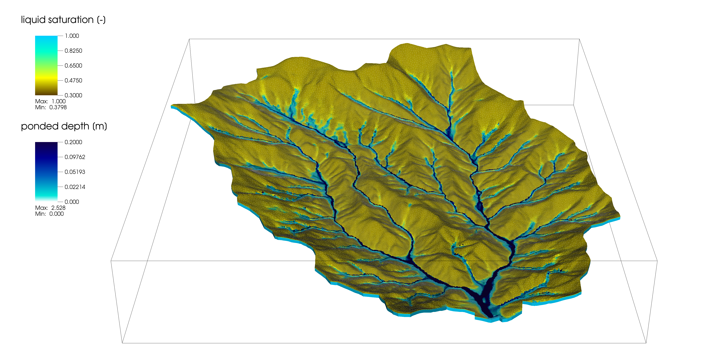

Amanzi-ATS#
The Advanced Terrestrial Simulator (ATS) is a code for solving watershed-to-river basin scale problems on integrated, distributed ecohydrology, including the built environment.
Capabilities are largely based on solving various forms of Richards equation coupled to a surface flow equation, along with the needed sources and sinks. This can (but need not) include thermal processes (especially ice for frozen soils), evapo-transpiration, surface energy exchange with the atmosphere, snow, deformation, gray and green infrastructure, and much more. In addition, we solve problems of reactive transport in both the subsurface and surface, leveraging external geochemical engines through the Alquimia interface.
ATS is a suite of physics processes built for Amanzi. Amanzi includes the underlying mesh, data structure, multi-physics APIs, and math libraries for defining and solving the physics implemented in ATS.
Join the Community#
ATS is more than just a code, but a community of users with a lot of experience in both integrated hydrology, Arctic hydrology, reactive transport, and ATS code development. Please join us on our Google group. We try very hard to create a welcoming community that supports and enables our users to do their science.
Installation#
ATS is now built as a part of Amanzi directly. Please see the ATS installation instructions on Amanzi’s site.
License and Copyright#
Please see the LICENSE and COPYRIGHT files included in the top level directory of your ATS download.
Citation#
In all works, please cite the code:
E.T. Coon, M. Berndt, A. Jan, D. Svyatsky, A.L. Atchley, E. Kikinzon, D.R. Harp, G. Manzini, E. Shelef, K. Lipnikov, R. Garimella, C. Xu, J.D. Moulton, S. Karra, S.L. Painter, E. Jafarov, and S. Molins. 2020. Advanced Terrestrial Simulator. U.S. Department of Energy, USA. Version 1.0. DOI
Additionally, consider citing one or more of the below, depending upon the application space:
Watershed Hydrology: Coon, Ethan T., et al. “Coupling surface flow and subsurface flow in complex soil structures using mimetic finite differences.” Advances in Water Resources 144 (2020): 103701. DOI
Arctic Hydrology: Painter, Scott L., et al. “Integrated surface/subsurface permafrost thermal hydrology: Model formulation and proof‐of‐concept simulations.” Water Resources Research 52.8 (2016): 6062-6077. DOI
Reactive Transport: Molins, Sergi, et al. “A Multicomponent Reactive Transport Model for Integrated Surface‐Subsurface Hydrology Problems.” Water Resources Research 58.8 (2022): e2022WR032074. DOI
Multiphysics Modeling: Coon, Ethan T., J. David Moulton, and Scott L. Painter. “Managing complexity in simulations of land surface and near-surface processes.” Environmental modelling & software 78 (2016): 134-149. DOI
You may also be interested in pursing the list of all peer-reviewed literature using ATS.
Wiki#
Please see our Wiki Page for frequently asked questions and a Developer’s Guide.